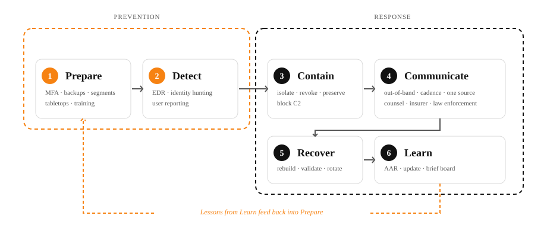

Campus Ransomware Playbook
Higher education is a high-value target: open networks, federated identities, valuable research, sensitive student data, legacy systems, and decentralized procurement. Recent reporting documents continued ransomware pressure on colleges and universities, with growing harm from third-party software exploits.
Resilience is a campus-wide responsibility. A student spotting a phish, a faculty member backing up research, a finance officer verifying a wire — each is part of the defense. This playbook treats every role as equally important.
How to use this playbook
- Find your role. Each role has a page with concise responsibilities for the three phases of an incident.
- Run the checklists. Mark items as you complete them. Your progress is saved on this device only — no accounts, no servers.
- Practice with scenarios. Decision trees and quizzes turn guidance into reflexes you can actually use under pressure.
- Print or download PDFs. Each role guide is available as a PDF for posting, distributing, or archiving.
Start by choosing your role
Every role matters equally. Pick yours to see exactly what you should do before, during, and after a ransomware incident.
Student
Protect your accounts, recognize phishing, know how and when to report.
Faculty
Safeguard course materials, research data, and student records.
Staff
Daily habits, vendor risks, and what to do when something looks wrong.
IT & Security
Hardening, detection, containment, recovery, and after-action review.
Leadership
Governance, decisions during a crisis, and resilience investments.
Communications & Legal
Transparent messaging, regulatory notification, and reputation.
Phases of a ransomware incident
Most well-tested guidance organizes work around these phases. We use them throughout.

About this resource
The Campus Ransomware Playbook is created by Joshua Gerstenfeld and Scott Jacques with support from the CrimRxiv Consortium. The site is maintained on a quarterly cadence, with content reviewed against EDUCAUSE, NIST, and CISA guidance.
Source code is released under the MIT License. Non-software content (text, diagrams, illustrations) is released under CC BY 4.0. The repository is at github.com/crimconsortium/campus-ransomware-playbook.
Educational resource — not for use during a live incident
This site is an educational synthesis of public guidance for advance reading and planning. If you believe a ransomware incident is occurring right now, contact your campus IT or information-security team immediately using a phone or known-good device. In the United States, public reporting and assistance are also available from CISA #StopRansomware and the FBI Internet Crime Complaint Center. Nothing on this site is professional incident-response advice, legal advice, or a substitute for trained responders, qualified counsel, your institution’s policies, contracts, insurance, or applicable law.